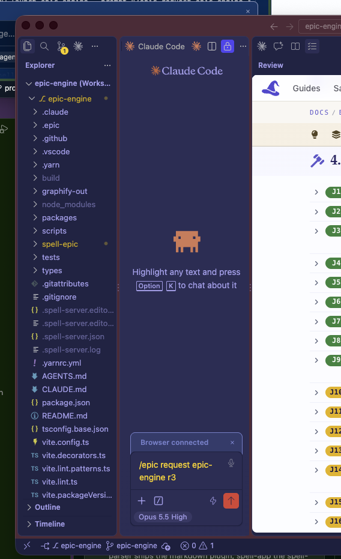

Owen's test run, 2026-10-19 20:44: V1 failed.
Owen: opened a new vscode window. Paste screenshot doesn't work in this window
And inline in the chat it said:
```Your comment-box screenshot is about the test pages' tooling, so I sent it to
epic-engine as r3 instead of fixing it here.
The image came mid-turn and couldn't be attached, so the request describes it in words: more tan above and below the
box than at the sides.
No epic-engine session was running, so a new one opened in its window with the command
already typed in. It may be waiting for you to press Enter there.
```

fix it